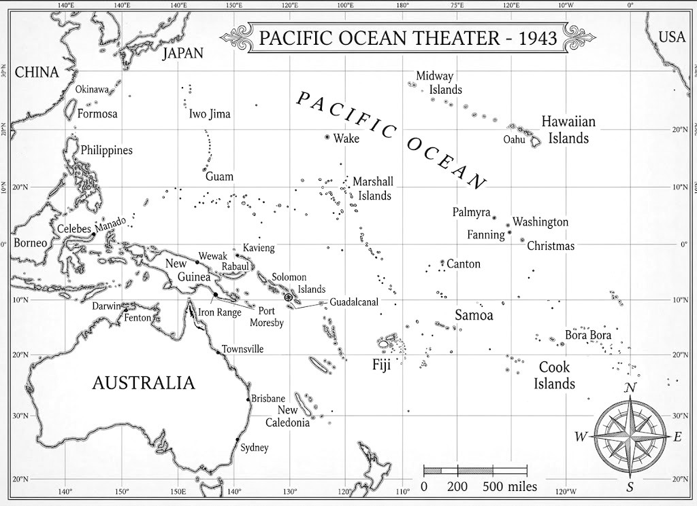
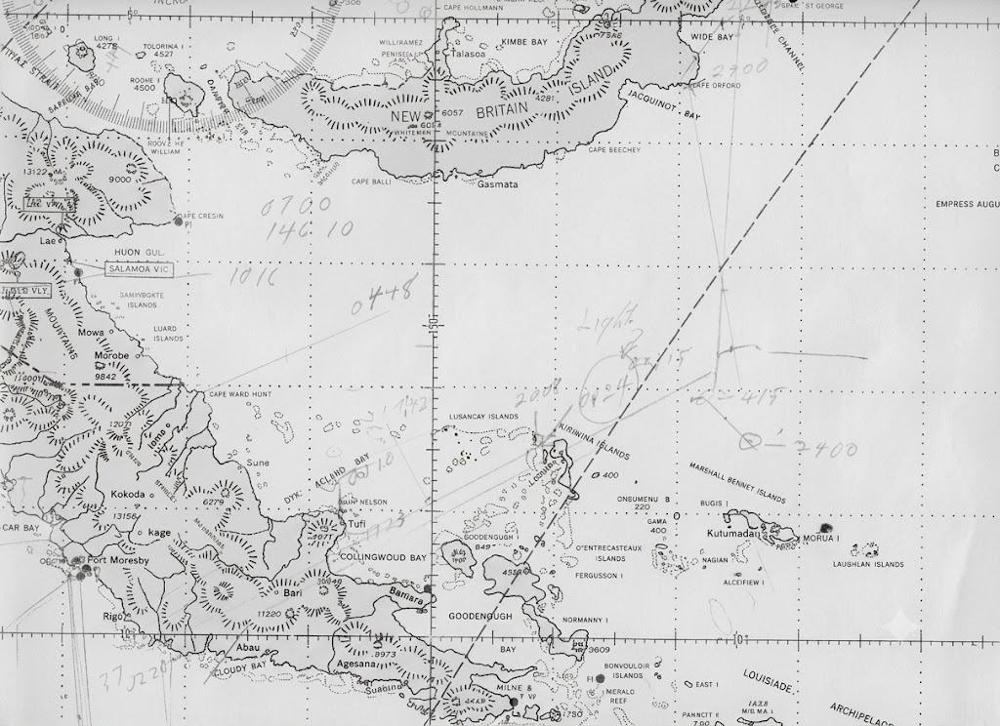
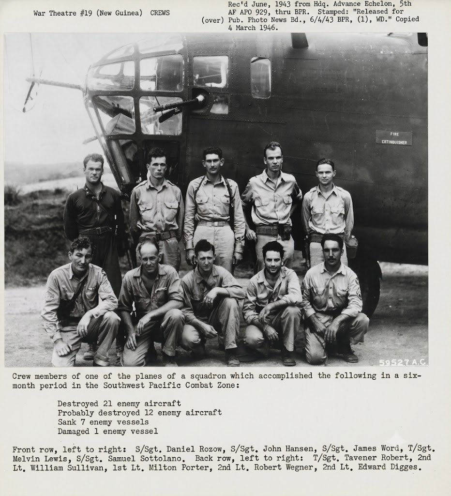

Navigator: Look Inside
A World War II Memoir
By William John Sullivan
This preview contains selected maps, photographs, the Table of Contents, Editor's Note, and Chapter 16, "Port Moresby."
Maps and Charts




Table of Contents
Part I - Becoming a Navigator
- Leaving Home
- Kelly Field
- Chickasha: The Washout
- Ellington and Hondo
- Graduation and Commissioning
- San Francisco: Waiting for War
- Embarkation: Convoy to Hawaii
- Hickam and Bellows: First Missions
- Air Transport Command
- Rickenbacker Search
- Joining the 400th Squadron
- The Hawaiian Interlude
- Across the Pacific to Australia
Part II - The Reconnaissance War
- First Missions
- Learning to Live with War
- Port Moresby
- The Reconnaissance War
- The Long Flight to Manado
- Sydney
- Squadron Navigator
- Losses
- Jungle Fever
- Life Between Missions
- Orders Home
Part III - Coming Home
- Across the Pacific Again
- Leave in Phoenix and Duluth
- Instructor at Dalhart
- Radar Navigation
- Love and Marriage
- The Proposal
- June Twenty-Ninth
- Honeymoon and First Lesson
Editor's Note
Navigator is based on the writings of William John Sullivan, a navigator who served with the 90th Bomb Group in the Southwest Pacific during World War II.
The principal sources for this edition are two manuscripts written by Sullivan at different times in his life. The first was a wartime memoir focused primarily on his military service. The second was a later autobiography that expanded upon many of the same events and included recollections of his family, education, friendships, and postwar life.
The goal of the editing process was not to modernize the narrative or reinterpret Sullivan's experiences. Every effort was made to retain his straightforward style, his sense of humor, and his preference for describing events without exaggeration.
Like many veterans, Sullivan wrote primarily about the people around him rather than about himself. What emerges from these pages is not only the story of a navigator, but also the story of a crew, a squadron, and a generation of young men who learned their craft under wartime conditions and carried those experiences with them for the rest of their lives.
Dennis Sullivan, Editor
Chapter 16 - Port Moresby
Australian Army engineers were completing a new airstrip at Port Moresby with all the tent buildings necessary to accommodate the 90th Group and some of our support personnel who had already arrived in Port Moresby and others en route or on the verge of moving.
The timing was fortunate as the rains came and we were forced to hurriedly abandon our flooded Iron Range Air Base. Port Moresby, being closer to the Japanese bases, proved to be a much better base for our combat missions, although we were still subjected to nightly Japanese bombings.
We moved to Port Moresby, leaving Iron Range with difficulty as the landing strip was partially under water from the torrential rains. Our support group, the ground personnel, went by ship and arrived several weeks after we did.
We lived as casuals, orphans, coping as best we could and eating at a dining room called Consolidated Mess. Our standard fare was creamed corned beef and instant mashed potatoes served in thirty-gallon galvanized garbage cans.
We four tent mates were amazingly compatible, with Weinberg enthusiastically entertaining us and organizing our extracurricular activities. All of us were readers and between us we had an impressive collection of paperback books.
Upon arriving at our new base, we were issued a four-man tent which we were expected to set up. After some friendly arguing, Al wanted to choose a level spot while I insisted on a location on a slope that would keep us out of the mud during the rains.
Al came up with a solution. He found some wooden crates which we planted on the low side and then covered them with dirt to get a level floor for our tent.
Pete Peterson, my neighbor, my friend and my tormentor, was living in a tent close to us but on level ground.
Pete had a sense of humor and displayed it by coming over and volunteering a few despairing remarks such as, "This has got to be the stupidest sight I've ever seen. It had to be the brain child of a dumb Irishman."
One of my tent mates persuaded the workers to install a tee and a hose bib in the line in a sheltered spot behind our tent. We then attached a piece of garden hose that led to a can with holes punched in it suspended from a tree branch to give us our own private shower.
The arrangement turned out to be even better than we expected. Since the pipe ran to the bottom of the colonel's tank, we could siphon water whenever there was any in the tank. Sometimes we would run the tank dry.
As long as we were stationed there, the colonel never did figure out why he kept running out of water.
Punchy was an enlisted man, not the smartest man in our squadron but well liked for his sunny disposition. He performed odd jobs for us and was always willing to serve.
On this occasion Punchy, as he did each day, had poured five gallons of aircraft fuel into the outhouse hole.
One of the unfortunates was a member of our ground crew. The next day, when Alex and I visited him at the hospital, we found him with his legs suspended in an uncomfortable manner.
He was quite unhappy with his plight, but had not lost his sense of humor. When we asked how he was doing he gave us a stern look and replied, "War is hell."
Punchy was devastated by this turn of events but was forgiven magnanimously and, as time passed, he regained his good spirits.
Chapter continues in the published edition.
The Port Moresby Shower
Captain Porter's Crew

Continue Reading
Navigator contains thirty-two chapters covering navigation training, Pacific crossings, reconnaissance missions, combat operations, squadron life, loss, homecoming, and the beginning of William Sullivan's postwar life.